punctilious package¶
Submodules¶
punctilious.abstract_formula_library module¶
- class punctilious.abstract_formula_library.AbstractFormula(t, s)[source]¶
Bases:
tupleA
AbstractFormulais a tuple (T, S) such that: - T is a rooted-plane-tree, - S is a sequence of natural numbers.- Parameters:
-
t (rpt.FlexibleRootedPlaneTree)
s (sl.FlexibleNaturalNumber1Sequence)
- __init__(t, s)[source]¶
-
- Parameters:
-
t (RootedPlaneTree | tuple[RootedPlaneTree, ...] | Iterator | Generator | None)
s (NaturalNumber1Sequence | tuple[int, ...] | Iterator | Generator | None)
- property abstract_inference_rule_conclusion: AbstractFormula¶
If this abstract-formula is an abstract-inference-rule, returns its conclusion.
See
AbstractFormula.is_abstract_inference_rulefor a detailed description of abstract-inference-rules.- Returns:
the conclusion of this inference-rule.
- property abstract_inference_rule_premises: AbstractFormula¶
If this abstract-formula is an abstract-inference-rule, returns its premises.
See
AbstractFormula.is_abstract_inference_rulefor a detailed description of abstract-inference-rules.- Returns:
the premises of this inference-rule.
- property abstract_inference_rule_variables: AbstractFormula¶
If this abstract-formula is an abstract-inference-rule, returns its variables.
See
AbstractFormula.is_abstract_inference_rulefor a detailed description of abstract-inference-rules.- Returns:
the variables of this inference-rule.
- property abstract_map_preimage_sequence: AbstractFormula¶
If this abstract-formula is an abstract-map, returns its preimage sequence.
See
AbstractFormula.is_abstract_mapfor a detailed description of abstract-maps.- Returns:
the preimage sequence of this map.
- property abstract_map_image_sequence: AbstractFormula¶
If this abstract-formula is an abstract-map, returns its image sequence.
See
AbstractFormula.is_abstract_mapfor a detailed description of abstract-maps.- Returns:
the image sequence of this map.
- derive_abstract_inference_rule(p)[source]¶
If this abstract-formula is an abstract-inference-rule, derives a theorem from the finite (computable) sequence of premises p.
See
AbstractFormula.is_abstract_inference_rulefor a detailed description of abstract-inference-rule.- Parameters:
p (AbstractFormula | tuple[RootedPlaneTree | tuple[RootedPlaneTree, ...] | Iterator | Generator | None, NaturalNumber1Sequence | tuple[int, ...] | Iterator | Generator | None] | Iterator | Generator | None) – a finite (computable) sequence of premises, in the order expected by the inference-rule.
- Returns:
the theorem derived from this abstract-inference-rule, given premises p.
- Return type:
- get_abstract_map_value(phi)[source]¶
If this abstract-formula is an abstract-map, returns the image phi under this map.
See
AbstractFormula.is_abstract_mapfor a detailed description of abstract-maps.- Parameters:
phi (AbstractFormula | tuple[RootedPlaneTree | tuple[RootedPlaneTree, ...] | Iterator | Generator | None, NaturalNumber1Sequence | tuple[int, ...] | Iterator | Generator | None] | Iterator | Generator | None) – a preimage element.
- Returns:
the image of phi under this map.
- Return type:
- property is_abstract_map: bool¶
Returns True if this abstract-formula is an abstract-map, False otherwise.
Intuitive definition: abstract-map¶
- Intuitively, an abstract-map is an abstract-formula that is structurally
equivalent to a finite map.
Formal definition: abstract-map¶
A finite (computable) abstract-map
 is a tuple 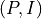 where:
is a tuple 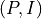 where: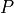 is a finite sequence of unique elements denoted as the preimage,
 is a finite sequence of unique elements denoted as
the image,
is a finite sequence of unique elements denoted as
the image,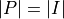.
Formal definition: abstract-map¶
An abstract-formula is an abstract-map if and only if:
its arity equals 2,
the arity of its first immediate subformula equals the arity of its second immediate subformula,
the immediate subformulas of its first immediate subformula are unique.
Note
The following properties and methods are available when an abstract-formula is an abstract-map:
AbstractFormula.abstract_map_preimageAbstractFormula.abstract_map_image
- return:
True if this abstract-formula is an abstract-map, False otherwise.
- property is_abstract_inference_rule: bool¶
Returns True if this abstract-formula is an abstract-inference-rule, False otherwise.
Intuitive definition: abstract-inference-rule¶
- Intuitively, an abstract-inference-rule is an abstract-formula that is structurally
equivalent to an inference rule.
Formal definition: abstract-inference-rule¶
An abstract-inference-rule
is a tuple 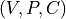
where: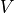 is a finite sequence of unique elements denoted as the variables,
is a finite sequence of unique elements denoted as the premises,
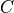 is denoted as the conclusion.
Formal definition: abstract-inference-rule¶
An abstract-formula is an abstract-inference-rule if and only if:
its arity equals 3.
Note
The following complementary properties and methods are available when an abstract-formula is an abstract-map:
- return:
True if this abstract-formula is an abstract-inference-rule, False otherwise.
- classmethod abstract_map_from_preimage_and_image(n, p, i)[source]¶
Declares a new abstract-map.
- Parameters:
-
n (int) – The main-element of the abstract-map.
p (AbstractFormula | tuple[RootedPlaneTree | tuple[RootedPlaneTree, ...] | Iterator | Generator | None, NaturalNumber1Sequence | tuple[int, ...] | Iterator | Generator | None] | Iterator | Generator | None) – The preimage of the abstract-map.
i (AbstractFormula | tuple[RootedPlaneTree | tuple[RootedPlaneTree, ...] | Iterator | Generator | None, NaturalNumber1Sequence | tuple[int, ...] | Iterator | Generator | None] | Iterator | Generator | None) – The image of the abstract-map.
- Returns:
The resulting abstract-map.
- Return type:
- property arity: int¶
The
AbstractFormula.arityis the number of immediate sub-formulas it contains.- Returns:
- property canonical_abstract_formula: AbstractFormula¶
The canonical-abstract-formula of this abstract-formula.
Definition: the canonical-abstract-formula phi of an abstract-formula psi is a formula such that:
their rooted-plane-tree are rooted-plane-tree-equivalent,
-
- the natural-number-sequence of phi is the canonical-naturel-number-sequence
of the natural-number-sequence of psi
- Returns:
The canonical-abstract-formula of this abstract-formula.
- property formula_degree: int¶
The formula_degree of an
AbstractFormulais the number of non-leaf nodes it contains.This definition is derived from (Mancosu et al., 2021, p. 18).
Attention point: do not confuse tree_size and formula_degree.
- Returns:
- classmethod from_any(o)[source]¶
-
- Parameters:
o (AbstractFormula | tuple[RootedPlaneTree | tuple[RootedPlaneTree, ...] | Iterator | Generator | None, NaturalNumber1Sequence | tuple[int, ...] | Iterator | Generator | None] | Iterator | Generator | None)
- Return type:
- classmethod from_immediate_sub_formulas(n, s)[source]¶
Given a root natural number n, and a tuple of abstract-formulas s, declares a new formula 𝜓 := n(s_0, s_1, …, s_n) where s_i is an element of s.
- Parameters:
-
n (int | None)
s (tuple[AbstractFormula | tuple[RootedPlaneTree | tuple[RootedPlaneTree, ...] | Iterator | Generator | None, NaturalNumber1Sequence | tuple[int, ...] | Iterator | Generator | None] | Iterator | Generator | None, ...] | None)
- Returns:
- Return type:
- classmethod from_tree_of_integer_tuple_pairs(p)[source]¶
Declares an abstract-formula object from a tree of integer/tuple pairs.
Use case¶
Tree of integer/tuple pairs is a natural pythonic data structure to express abstract formulas.
Definition¶
A tree of integer/tuple pairs T defined as:
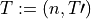
where:
 is a natural number
is a natural number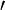 is (possibly empty) tuple of trees of integer/tuple pairs.
Sample¶
The tree of integer/tuple pairs: (0, ((1,(),),(0,((2,(),),(1,(),),),),(2,(),),),)
…maps to the abstract-formula: 0(1,0(2,1),2)
- param p:
A tree of integer/tuple pairs.
- return:
an abstract-formula.
- Return type:
- get_immediate_subformula_index(phi)[source]¶
Returns the 0-based index position of phi in this abstract-formula immediate subformulas.
Prerequisites:
the immediate subformulas of this abstract-formula are unique, cf.
AbstractFormula.immediate_subformulas_are_unique,phi is an immediate subformula of this abstract-formula.
- Parameters:
phi (AbstractFormula | tuple[RootedPlaneTree | tuple[RootedPlaneTree, ...] | Iterator | Generator | None, NaturalNumber1Sequence | tuple[int, ...] | Iterator | Generator | None] | Iterator | Generator | None)
- Returns:
- get_sub_formula_by_path(p)[source]¶
Given a path p, returns the corresponding sub-formula.
Definition - sub-formula path: A sub-formula path is a finite sequence of natural numbers >= 0, of length > 0, that gives the index position of the sub-formulas, following the depth-first algorithm, starting with 0 meaning the original tree.
It follows that for any formula phi, the path (0) returns the formula itself.
- Parameters:
p (tuple[int, ...])
- Returns:
- Return type:
- property immediate_sub_formulas: tuple[AbstractFormula, ...]¶
The immediate_sub_formulas of an
AbstractFormulaphi is the tuple ofAbstractFormulaelements that are the immediate children formulas of phi in the formula tree, or equivalently the formulas of degree 0 in phi.The term immediate sub-formula is used by (Mancosu 2021, p. 17-18).
See also:
References:
Mancosu 2021.
- Returns:
- property immediate_subformulas_are_unique: bool¶
Returns True if all immediate subformulas contained in this
AbstractFormulaare unique.Trivial case: If the
AbstractFormulais a leaf, i.e. it contains no immediate subformulas, then all of its immediate subformulas are unique.- Returns:
- is_abstract_formula_equivalent_to(phi)[source]¶
Returns True if this
AbstractFormulais abstract-formula-equivalent toAbstractFormulaphi.Formal definition: Two abstract-formulas phi and psi are abstract-formula-equivalent if and only if:
the rooted-plane-tree of phi is rooted-plane-tree-equivalent to the rooted-plane-tree of psi,
the natural-numbers-sequence of phi is natural-numbers-sequence-equivalent to the natural-numbers-sequence of psi.
- Parameters:
phi (AbstractFormula)
- Returns:
- is_abstract_formula_equivalent_to_with_variables(phi, v)[source]¶
Returns True if this abstract-formula is abstract-formula-equivalent to abstract-formula phi, after substitution of variables with assigned values in this abstract-formula, according to variables and assigned values in abstract-map v.
- Parameters:
-
phi (AbstractFormula) – An abstract-formula.
v (AbstractFormula) – An abstract-map whose preimage is denoted as the variables, and image as the assigned values.
- Returns:
True if formulas are equivalent given above conditions, False otherwise.
- Return type:
bool
- property is_canonical: bool¶
Returns True if this abstract-formula is in canonical form.
Definition: An abstract-formula phi is canonical if and only if its natural-number-sequence is a restricted-growth-function-sequence.
- Returns:
True if this abstract-formula is in canonical form, False otherwise.
- is_canonical_abstract_formula_equivalent_to(phi)[source]¶
Returns True if this
AbstractFormulais canonical-abstract-formula-equivalent toAbstractFormulaphi.Formal definition: Two abstract-formulas phi and psi are canonical-abstract-formula-equivalent if and only if:
the canonical-abstract-formula of phi is abstract-formula-equivalent to the canonical-abstract-formula of psi.
Intuitive definition: Two formulas are canonical-abstract-formula-equivalent if they have the same “structure”.
- Parameters:
phi (AbstractFormula)
- Returns:
- is_equal_to(phi)[source]¶
Under
AbstractFormulacanonical ordering, returns True if the currentAbstractFormulais equal to phi, False otherwise.See
AbstractFormula.is_less_thanfor a definition of abstract-formula canonical-ordering.- Parameters:
phi (AbstractFormula | tuple[RootedPlaneTree | tuple[RootedPlaneTree, ...] | Iterator | Generator | None, NaturalNumber1Sequence | tuple[int, ...] | Iterator | Generator | None] | Iterator | Generator | None) – A
AbstractFormula.- Returns:
True if the current
AbstractFormulais equal to s, False otherwise.
- is_less_than(phi)[source]¶
Under
AbstractFormulacanonical ordering, returns True if the currentAbstractFormulais less than phi, False otherwise.Definition: canonical ordering of abstract-formula, denoted 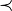, is defined as rooted-plane-tree-first, natural-number-sequence second.
- Parameters:
phi (AbstractFormula | tuple[RootedPlaneTree | tuple[RootedPlaneTree, ...] | Iterator | Generator | None, NaturalNumber1Sequence | tuple[int, ...] | Iterator | Generator | None] | Iterator | Generator | None) – A
AbstractFormula.- Returns:
True if the current
AbstractFormulais equal to phi, False otherwise.- Return type:
bool
- is_immediate_sub_formula_of(phi)[source]¶
Returns True if this
AbstractFormulais an immediate sub-formula ofAbstractFormulaphi.- Parameters:
phi (AbstractFormula)
- Returns:
- is_immediate_super_formula_of(phi)[source]¶
Returns True if
AbstractFormulaphi is an immediate super-formula of thisAbstractFormula.- Parameters:
phi (AbstractFormula)
- Returns:
- property is_increasing: bool¶
Returns True if this abstract-formula is increasing, False otherwise.
Definition - increasing abstract-formula: An abstract-formula is increasing or increasing under canonical order, if its immediate subformulas are ordered.
Definition - increasing abstract-formula: An abstract-formula 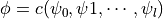 is increasing, or increasing under canonical order, if and only if 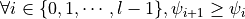.
- Returns:
True if this abstract-formula is increasing, False otherwise.
- property is_strictly_increasing: bool¶
Returns True if this abstract-formula is strictly increasing, False otherwise.
Definition - strictly increasing abstract-formula: An abstract-formula is strictly increasing or strictly increasing under canonical order, if its immediate subformulas are strictly ordered.
Definition - strictly increasing abstract-formula: An abstract-formula is strictly increasing, or strictly increasing under canonical order, if and only if 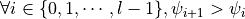.
- Returns:
True if this abstract-formula is strictly increasing, False otherwise.
- is_sub_formula_of(phi)[source]¶
Returns True if this
AbstractFormulais a sub-formula ofAbstractFormulaphi.- Parameters:
phi (AbstractFormula)
- Returns:
- is_super_formula_of(phi)[source]¶
Returns True if
AbstractFormulaphi is a sub-formula of thisAbstractFormula.- Parameters:
phi (AbstractFormula)
- Returns:
- iterate_immediate_sub_formulas()[source]¶
Iterates the immediate sub-formulas of the
AbstractFormula.See
AbstractFormula.immediate_sub_formulasfor a definition of the term immediate sub-formula.- Returns:
A generator of
AbstractFormula.- Return type:
Generator[AbstractFormula, None, None]
- iterate_immediate_sub_sequences()[source]¶
Iterates the immediate (children) sub-
UnrestrictedSequenceof thisAbstractFormula.Note:
A sub-sequence of an abstract-formula is determined by:
-
the parent rgf sequence,
and 2) the rooted plane tree.
- Return type:
Generator[NaturalNumber1Sequence, None, None]
-
- iterate_sub_formulas()[source]¶
Iterates the sub-formulas of the
AbstractFormulausing the depth-first, ascending nodes algorithm.See
AbstractFormula.sub_formulasfor a definition of the term sub-formula.- Returns:
- Return type:
Generator[AbstractFormula, None, None]
- property main_element: int¶
The main_element of an
AbstractFormulais the first element of its attr:AbstractFormula.natural_numbers_sequence, that corresponds to the root node of the attr:AbstractFormula.rooted_plane_tree.- The term main element was coined in reference to the term main connective
(cf. Mancosu 2021, p. 17), because abstract-formulas are composed of sequences, and thus main connective is reserved for “concrete” formulas.
References:
Mancosu 2021
- Returns:
1
- property natural_number_sequence: NaturalNumber1Sequence¶
Returns the
NaturalNumberSequencecomponent of thisAbstractFormula.Shortcut: self.s.
- Returns:
- represent_as_function(connectives=None)[source]¶
Returns a string representation of the
AbstractFormulausing function notation.By default, connectives are represented by their respective values in the
AbstractFormula.natural_numbers_sequence.- Parameters:
connectives (tuple | None) – A tuple of connectives of length equal to the length of the
AbstractFormula.natural_numbers_sequence. Default: None.- Returns:
- Return type:
str
- represent_as_map_extension(connectives=None)[source]¶
Returns a string representation of the
AbstractFormulausing map notation.By default, connectives are represented by their respective values in the
AbstractFormula.natural_numbers_sequence.- Parameters:
connectives (tuple | None) – A tuple of connectives of length equal to the length of the
AbstractFormula.natural_numbers_sequence. Default: None.- Returns:
A string representation of this abstract-formula.
- Return type:
str
- property rooted_plane_tree: RootedPlaneTree¶
The
RootedPlaneTreecomponent of thisAbstractFormula.Shortcut: self.t.
- property s: NaturalNumber1Sequence¶
A shortcut for self.natural_numbers_sequence.
- property sequence_max_value: int¶
The sequence_max_value of an
AbstractFormulais the max_value of its natural_numbers_sequence.
- property sub_formulas: tuple[AbstractFormula, ...]¶
The sub_formulas of an
AbstractFormulaphi is the tuple ofAbstractFormulaelements that are present in the formula tree of phi, including phi itself.Formal definition:
If phi is an atomic formula, the sub-formulas of phi is the tuple (phi).
-
- If phi is a non-atomic formula, the sub-formulas of phi is the tuple
composed of phi, and all sub-formulas of the immediate sub-formulas of phi, in ascending order.
Nothing else is a sub-formula.
This definition is a generalization of the term formula defined by (Mancosu 2021, definition 2.2, p. 14) for propositional-logic.
See also:
References: - Mancosu 2021.
- Returns:
A tuple of the sub-formulas.
- substitute_sub_formulas_with_map(m)[source]¶
-
- Returns a new abstract-formula similar to the current abstract-formula,
except that its subformulas present in the map m preimage, are substituted with their corresponding images, giving priority to the substitution of superformulas over subformulas.
- Parameters:
m (AbstractFormula | tuple[RootedPlaneTree | tuple[RootedPlaneTree, ...] | Iterator | Generator | None, NaturalNumber1Sequence | tuple[int, ...] | Iterator | Generator | None] | Iterator | Generator | None) – An abstract-map.
- Returns:
A substituted formula.
- Return type:
- property t: RootedPlaneTree¶
A shortcut for self.rooted_plane_tree.
- property tree_degree: int¶
The tree_degree of an
AbstractFormulais the number of vertices in its RootedPlaneTree.Attention point: do not confuse tree_degree and formula_degree.
- property tree_size: int¶
The tree_size of an
AbstractFormulais the number of vertices in its RootedPlaneTree.Attention point: do not confuse tree_size and formula_degree.
- punctilious.abstract_formula_library.extract_tree_of_tuples_and_sequence_from_tree_of_integer_tuple_pairs(p)[source]¶
Given a tree of integer/tuple pairs, extracts:
its tree of tuples,
and its sequence of integers,
following the depth-first ascending-nodes algorithm.
- Parameters:
p – the tree of integer/tuple pairs
- Returns:
a pair (T, S) where T is a tree of tuples, and S is a sequence of integers.
- punctilious.abstract_formula_library.AF¶
alias of
AbstractFormula
punctilious.catalan_number_library module¶
- punctilious.catalan_number_library.get_catalan_number(n)[source]¶
Returns the n-th Catalan number with n index starting at 0.
Catalan numbers 1, 1, 2, 5, 14, 42, 132, 429, 1430, https://oeis.org/A000108 https://en.wikipedia.org/wiki/Catalan_number
- Parameters:
n (int)
- Returns:
- Return type:
int
- punctilious.catalan_number_library.get_catalan_triangle_number(n, k)[source]¶
Compute the Catalan triangle value C(n, k).
Bibliography¶
- Parameters:
-
n (int)
k (int)
- punctilious.catalan_number_library.c(n)¶
Returns the n-th Catalan number with n index starting at 0.
Catalan numbers 1, 1, 2, 5, 14, 42, 132, 429, 1430, https://oeis.org/A000108 https://en.wikipedia.org/wiki/Catalan_number
- Parameters:
n (int)
- Returns:
- Return type:
int
punctilious.connective_catalog module¶
A catalogue of well-known connectives.
- punctilious.connective_catalog.is_a_propositional_logic_variable: Connective = (UUID('1dde6cdb-8268-4586-bfdb-5531baee5b6f'), 'is-a-propositional-variable')¶
Connective used to formally declare variables of the propositional-logic axiomatic calculi.
References: - Mancosu 2021, definition 2.1 (p. 13).
- punctilious.connective_catalog.is_a_propositional_logic_formula: Connective = (UUID('1dde6cdb-8268-4586-bfdb-5531baee5b6f'), 'is-a-propositional-variable')¶
Connective used to formally declare formulas of the propositional-logic axiomatic calculi.
References: - Mancosu 2021, definition 2.2 (p. 14).
punctilious.connective_library module¶
- class punctilious.connective_library.Connective(fallback_string_representation, uid=None)[source]¶
Bases:
tupleA Connective is an abstract symbol that may be assigned various (human-readable) representations, and that is recognized as a distinctive semantic unit.
References
Mancosu 2021, definition 2.1, p. 14, p. 15.
- Parameters:
-
fallback_string_representation (str)
uid (uuid.UUID | str | None)
- __init__(fallback_string_representation, uid=None)[source]¶
-
- Parameters:
-
fallback_string_representation (str)
uid (UUID | str | None)
- property fallback_string_representation: str¶
The fallback_string_representation of a Connective is a string representation that is always available, and will be used as a fallback value when no solution can be found to return a string representation matching user preferences.
fallback_string_representation is an immutable property.
- By convention, the fallback_string_representation:
-
use a safe subset of Unicode characters that should render properly on any computer system.
can be naturally used in mathematical expressions or formulas.
use English words separated by dashes (in such a way as to constitute a single word for natural representation in mathematical expressions or formulas).
be as unambiguous as possible while not being too verbose or lengthy.
- Returns:
A string representation of the connective.
- classmethod from_any(o)[source]¶
Declares a connective from a Python object that can be interpreted as a connective.
Note
This method is redundant with the default constructor.
- Parameters:
o (Connective | tuple[UUID, str]) – a Python object that can be interpreted as a connective.
- Returns:
a connective.
- Return type:
- get_string_representation(**user_preferences)[source]¶
Returns the string representation of the Connective that best matches user_preferences.
- Parameters:
user_preferences
- Returns:
- Return type:
str
- is_connective_equivalent_to(c)[source]¶
Returns True if this
Connectiveis connective-equivalent toConnectivec.Formal definition: A connective c is connective-equivalent to a connective d if and only if this is the same symbol, or equivalently they are indistinguishable.
Note: connective-equivalence is a syntactic property, i.e. it is related to an abstract symbol, and it is not related to the diverse and sometimes ambiguous ways a connective may be represented.
Implementation: As a proxy for the concept of an abstract symbol, we use the
Connective.uidproperty.- Parameters:
c (Connective | tuple[UUID, str])
- Returns:
- is_equal_to(c)[source]¶
Under connective canonical ordering, returns True if the current connective is equal to c, False otherwise.
See
Connective.is_less_thanfor a definition of connection canonical-ordering.- Parameters:
c (Connective | tuple[UUID, str]) – A connective.
- Returns:
True if the current connective is equal to c, False otherwise.
- is_less_than(c)[source]¶
Under connective canonical ordering, returns True if the current connective is less than c, False otherwise.
Definition: canonical ordering of connective elements, denoted , is based on the 128-bit integer value of their respective UUID component, which is the default implementation of __lt__ in the uuid package.
Note: The canonical ordering of connective-sequence being dependent on the connectives UUIDs, the resulting ordering may appear random to the human reader.
- Parameters:
c (Connective | tuple[UUID, str]) – A connective`.
- Returns:
True if the current
NaturalNumberSequenceis equal to s, False otherwise.- Return type:
bool
- property uid: UUID¶
uid is an immutable property.
- Returns:
punctilious.const module¶
punctilious.formula_library module¶
- class punctilious.formula_library.Formula(phi, s)[source]¶
Bases:
tupleDefinition¶
A Formula is a pair (ϕ, M) where:
ϕ is an abstract formula of tree-size n.
-
- M is a bijective map between the subset of natural-numbers N,
and a set of connectives C.
- __init__(phi, s)[source]¶
-
- Parameters:
-
phi (afl.FlexibleAbstractFormula)
s (sl.FlexibleConnectiveSequence)
- property arity: int¶
Returns the arity of the formula.
Definition: arity of a formula The arity of a formula 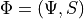 where math:Psi is an abstract-formula, and
 is a connective-sequence,
is the arity of its abstract-formula 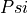.
is a connective-sequence,
is the arity of its abstract-formula 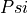.- Returns:
the arity of the formula.
- property abstract_formula: AbstractFormula¶
abstract_formula is an immutable property.
- Returns:
- property connective_sequence: ConnectiveSequence¶
connective_sequence is an immutable property.
- Returns:
- property formula_degree: int¶
The formula_degree of a Formula is the number of non-leaf nodes it contains.
This definition is derived from (Mancosu et al, 2021, p. 18).
Attention point: do not confuse tree_size and formula_degree.
- Returns:
- classmethod from_any(o)[source]¶
-
- Parameters:
o (Formula | tuple[ConnectiveSequence | tuple[Connective, ...] | Iterator | Generator | None, AbstractFormula | tuple[RootedPlaneTree | tuple[RootedPlaneTree, ...] | Iterator | Generator | None, NaturalNumber1Sequence | tuple[int, ...] | Iterator | Generator | None] | Iterator | Generator | None] | Iterator | Generator | None)
- Return type:
- property immediate_sub_formulas: tuple[Formula, ...]¶
The immediate_sub_formulas of a Formula phi is the tuple of Formula elements that are the immediate children formulas of phi in the formula tree, or equivalently the formulas of degree 0 in phi.
The term immediate sub-formula is used by (Mancosu 2021, p. 17-18) in the context of propositional logic.
See also: -
Formula.sub_formulasReferences: - Mancosu 2021.
- Returns:
- is_equal_to(t)[source]¶
Returns True if this formula is equal to formula t, False otherwise.
Definition - formula equality: In the context of the formula canonical ordering, equality is defined as formula equivalence.
See
Formula.is_less_thanfor a definition of formula canonical-ordering.- Parameters:
t (Formula | tuple[ConnectiveSequence | tuple[Connective, ...] | Iterator | Generator | None, AbstractFormula | tuple[RootedPlaneTree | tuple[RootedPlaneTree, ...] | Iterator | Generator | None, NaturalNumber1Sequence | tuple[int, ...] | Iterator | Generator | None] | Iterator | Generator | None] | Iterator | Generator | None) – A formula.
- Returns:
True if the current formula is equal to t, False otherwise.
- is_formula_equivalent_to(phi)[source]¶
Returns True if this
Formulais formula-equivalent toFormulaphi.Formal definition: Two formulas phi and psi are formula-equivalent if and only if: - the abstract-formula of phi is abstract-formula-equivalent to the abstract-formula of psi, - the connective-sequence of phi is connective-sequence-equivalent to the connective-sequence of psi.
- Parameters:
phi (Formula)
- Returns:
- is_immediate_sub_formula_of(phi)[source]¶
Returns True if phi is an immediate sub-formula of the current Formula, False otherwise.
- Parameters:
phi (Formula)
- Returns:
- Return type:
bool
- is_immediate_super_formula_of(phi)[source]¶
Returns True if
Formulaphi is an immediate sub-formula of thisFormula.- Parameters:
phi (Formula)
- Returns:
- property is_increasing: bool¶
Returns True if this formula is increasing, False otherwise.
Definition - increasing formula: An formula is increasing or increasing under canonical order, if its immediate subformulas are ordered.
Definition - increasing formula: A formula is increasing, or increasing under canonical order, if and only if .
- Returns:
True if this formula is increasing, False otherwise.
- property is_strictly_increasing: bool¶
Returns True if this formula is strictly increasing, False otherwise.
Definition - strictly increasing formula: An formula is strictly increasing or strictly increasing under canonical order, if its immediate subformulas are strictly ordered.
Definition - strictly increasing formula: A formula is strictly increasing, or strictly increasing under canonical order, if and only if .
- Returns:
True if this formula is strictly increasing, False otherwise.
- is_less_than(phi)[source]¶
Under
Formulacanonical ordering, returns True if the currentFormulais less than phi, False otherwise.Definition: canonical ordering of formula, denoted , is defined as abstract-formula first, connective-sequence second.
Note: The canonical ordering of connective-sequence being dependent on the connectives UUIDs, the resulting ordering may appear random to the human reader.
- Parameters:
phi (Formula | tuple[ConnectiveSequence | tuple[Connective, ...] | Iterator | Generator | None, AbstractFormula | tuple[RootedPlaneTree | tuple[RootedPlaneTree, ...] | Iterator | Generator | None, NaturalNumber1Sequence | tuple[int, ...] | Iterator | Generator | None] | Iterator | Generator | None] | Iterator | Generator | None) – A
Formula.- Returns:
True if the current
Formulais equal to phi, False otherwise.- Return type:
bool
- is_sub_formula_of(phi)[source]¶
Returns True if phi is a sub-formula of the current Formula, False otherwise.
- Parameters:
phi (Formula)
- Returns:
- Return type:
bool
- is_super_formula_of(phi)[source]¶
Returns True if
Formulaphi is a sub-formula of thisFormula.- Parameters:
phi (Formula)
- Returns:
- iterate_connectives()[source]¶
Iterate the Formula connectives, following the depth-first, ascending-nodes algorithm.
- Returns:
None
- Return type:
Generator[Connective, None, None]
- iterate_immediate_sub_formulas()[source]¶
Iterates the immediate sub-formulas of the
Formula.See
Formula.immediate_sub_formulasfor a definition of the term immediate sub-formula.
- property main_connective: Connective¶
The main_connective of a
Formulaphi is theConnectivethat corresponds to the root node of the formula tree.By definition of a
Formulaas a pair (phi, S) where S is sequence of connectives, the main_connective is the first element of S.The term main connective is defined by Mancosu 2021, p. 17 in the context of propositional logic.
References
Mancosu 2021
- Returns:
a
Connective
- represent_as_function()[source]¶
Returns a string representation of the Formula using function notation.
- Return type:
str
- property sequence_max_value: int¶
The sequence_max_value of a Formula is the sequence_max_value of its abstract_formula.
- property sub_formulas: tuple[Formula, ...]¶
The sub_formulas of an Formula phi is the tuple of Formula elements that are present in the formula tree of phi, including phi itself.
Formal definition¶
If phi is an atomic formula, the sub-formulas of phi is the tuple (phi).
-
- If phi is a non-atomic formula, the sub-formulas of phi is the tuple
composed of phi, and all sub-formulas of the immediate sub-formulas of phi, in ascending order.
Nothing else is a sub-formula.
This definition is a generalization of the term formula defined by (Mancosu 2021, definition 2.2, p. 14) for propositional-logic.
See also
-attr:Formula.immediate_sub_formulas
References
Mancosu 2021.
- return:
A tuple of the sub-formulas.
- substitute_sub_formulas(m)[source]¶
Returns a new
Formulasimilar to the currentFormulaexcept that all sub-formulas present in the map m domain, are substituted with correspondingFormulaelements in map m codomain, following the depth-first, ascending-nodes algorithm.- Parameters:
m (dict[Formula | tuple[ConnectiveSequence | tuple[Connective, ...] | Iterator | Generator | None, AbstractFormula | tuple[RootedPlaneTree | tuple[RootedPlaneTree, ...] | Iterator | Generator | None, NaturalNumber1Sequence | tuple[int, ...] | Iterator | Generator | None] | Iterator | Generator | None] | Iterator | Generator | None, Formula | tuple[ConnectiveSequence | tuple[Connective, ...] | Iterator | Generator | None, AbstractFormula | tuple[RootedPlaneTree | tuple[RootedPlaneTree, ...] | Iterator | Generator | None, NaturalNumber1Sequence | tuple[int, ...] | Iterator | Generator | None] | Iterator | Generator | None] | Iterator | Generator | None]) – A map Formula –> Formula.
- Returns:
- Return type:
- property tree_size: int¶
The tree_size of a Formula is the number of vertices in the RootedPlaneTree of its abstract_formula.
Attention point: do not confuse tree_size and formula_degree.
- Parameters:
-
phi (afl.FlexibleAbstractFormula)
s (csl.FlexibleConnectiveSequence)
punctilious.representation_foundation module¶
- class punctilious.representation_foundation.Presenter[source]¶
Bases:
ABCA Presenter is an abstract object that is able to generate representations of the object it is linked to.
- class punctilious.representation_foundation.TechnicalPresenter[source]¶
Bases:
PresenterA TechnicalPresenter is a Presenter that renders any object as a string of the following format: Id (ClassName)
- class punctilious.representation_foundation.StringPresenter(string)[source]¶
Bases:
PresenterA StringPresenter is a Presenter that renders a object as fixed string.
- Parameters:
string (str)
- class punctilious.representation_foundation.Representable(representation_function=None)[source]¶
Bases:
ABCA Representable is an abstract object that has a Presenter linked to it.
- Parameters:
representation_function (Presenter | None)
punctilious.rooted_plane_tree_catalog module¶
- class punctilious.rooted_plane_tree_catalog.RootedPlaneTreeGenerator[source]¶
Bases:
object- classmethod get_ordered_set_of_rooted_plane_trees_of_size_n(n)[source]¶
-
- Parameters:
n (int) – the size of the trees.
- Returns:
the ordered set of all rooted-plane-trees of size n by canonical order.
- Return type:
tuple[RootedPlaneTree, …]
- punctilious.rooted_plane_tree_catalog.leaf = ()¶
⬤
- punctilious.rooted_plane_tree_catalog.t1_a = ()¶
⬤
- punctilious.rooted_plane_tree_catalog.t2_a_aa = ((),)¶
⬤━━━⬤
- punctilious.rooted_plane_tree_catalog.t3_a_aa_aaa = (((),),)¶
⬤━━━⬤━━━⬤
- punctilious.rooted_plane_tree_catalog.t3_a_aa_ab = ((), ())¶
⬤━┳━⬤ ┗━⬤
- punctilious.rooted_plane_tree_catalog.t4_a_aa_aaa_aaaa = ((((),),),)¶
⬤━━━⬤━━━⬤━━━⬤
- punctilious.rooted_plane_tree_catalog.t4_a_aa_aaa_aab = (((), ()),)¶
⬤━━━⬤━┳━⬤ ┗━⬤
- punctilious.rooted_plane_tree_catalog.t4_a_aa_aaa_ab = (((),), ())¶
⬤━┳━⬤━━━⬤ ┗━⬤
- punctilious.rooted_plane_tree_catalog.t4_a_aa_ab_aba = ((), ((),))¶
⬤━┳━⬤ ┗━⬤━━━⬤
- punctilious.rooted_plane_tree_catalog.t4_a_aa_ab_ac = ((), (), ())¶
⬤━┳━⬤ ┣━⬤ ┗━⬤
punctilious.rooted_plane_tree_library module¶
- class punctilious.rooted_plane_tree_library.DyckWordLexicographicOder[source]¶
Bases:
BinaryRelationThe Dyck word lexicographic relation order of rooted plane trees.
Bibliography¶
- property least_element: object¶
If this is a relation order, and if it has a unique least element, returns that element.
- Returns:
- rank(x)[source]¶
If the binary-relation is an order-relation that is homomorphic to the natural numbers, and if a ranking algorithm is configured, returns the rank of object x.
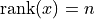.
- Parameters:
-
x (object)
x – The description is missing.
- Returns:
- Return type:
int
Note
0 should be mapped to the empty sequence (). 1 should be mapped to sequence (0).
- relates(x, y)[source]¶
Returns True if 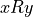, False otherwise.
- Parameters:
-
y (object)
x (object)
x – The description is missing.
y – The description is missing.
- Returns:
- Return type:
bool
 such that .
such that .
- class punctilious.rooted_plane_tree_library.RootedPlaneTree(*children, tuple_tree=None)[source]¶
Bases:
tupleA RootedPlaneTree is an immutable, finite (and computable) rooted plane tree, aka rooted ordered tree.
Reminder¶
Theorem 3.11 A graph G is a tree if and only if every two vertices of G are connected by a unique path. Chartrand, Lesniak, and Zhang, Graphs & Digraphs: Sixth Edition, p. 65.
- __init__(*children, tuple_tree=None)[source]¶
If all parameters are passed as None or empty tuples, a single node RootedPlaneTree is returned.
- Parameters:
-
children (RootedPlaneTree | tuple[RootedPlaneTree, ...] | Iterator | Generator | None) – A tuple of FlexibleRootedPlaneTree instances.
tuple_tree (int | tuple[TupleTree, ...]) – A TupleTree structure.
- property dyck_word: DyckWord¶
The Dyck string representation of this rooted plane tree.
Definition - Dyck string: A Dyck string is a string of balanced parentheses.
References: - https://en.wikipedia.org/wiki/Dyck_language - AHU (Aho, Hopcroft, and Ullman)
- Returns:
A Dyck word.
- property degree: int¶
The degree of a rooted-plane-tree is the number of immediate subtrees it has.
- Returns:
- classmethod from_any(o)[source]¶
Declares a rooted-plane-tree from a Python object that can be interpreted as a rooted-plane-tree.
Note
This method is redundant with the default constructor.
- Parameters:
o (RootedPlaneTree | tuple[RootedPlaneTree, ...] | Iterator | Generator | None) – a Python object that can be interpreted as a rooted-plane-tree.
- Returns:
a rooted-plane-tree.
- Return type:
- classmethod from_dyck_word(o)[source]¶
Declares a rooted-plane-tree from a Dyck word.
- Parameters:
o (DyckWord | str) – a Dyck word.
- Returns:
a rooted-plane-tree.
- Return type:
- classmethod from_immediate_subtrees(*t)[source]¶
Declares a rooted-plane-tree from a collection of immediate subtrees.
Given an ordered collection of rooted-plate-trees 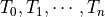, returns a new rooted-plane tree
such that ’s immediate subtrees are .
Note
This method is redundant with the default constructor.
- Parameters:
t (RootedPlaneTree | tuple[RootedPlaneTree, ...] | Iterator | Generator | None) – a collection of immediate subtrees.
- Returns:
a rooted-plane-tree.
- Return type:
- classmethod from_tuple_tree(t)[source]¶
Declares a rooted-plane-tree from a tree of python tuples.
- Parameters:
t – a tree of python tuples.
- Returns:
a rooted-plane-tree.
- Return type:
- get_subtree_by_path(p)[source]¶
Given a path p, returns the corresponding subtree.
Definition - rooted-plane-tree path: A rooted-plane-tree path is a finite sequence of natural numbers >= 0, of length > 0, that gives the index position of the sub-plane-trees, following the depth-first algorithm, starting with 0 meaning the original tree.
It follows that for any tree t, the path (0) returns the tree itself.
- Parameters:
p (tuple[int, ...])
- Returns:
- Return type:
- property immediate_subtrees: tuple[RootedPlaneTree, ...]¶
The tuple of immediate subtrees.
- Returns:
the tuple of the immediate subtrees.
- is_equal_to_under_o1(t)[source]¶
Returns True if this rooted-plane-tree is equal to rooted-plane-tree t, False otherwise.
Definition - rooted-plane-tree equality: In the context of the rooted-plane-tree canonical ordering, equality is defined as rooted-plane-tree equivalence.
See
RootedPlaneTree.is_less_thanfor a definition of rooted-plane-tree canonical-ordering.- Parameters:
t (RootedPlaneTree | tuple[RootedPlaneTree, ...] | Iterator | Generator | None) – A rooted-plane-tree.
- Returns:
True if the current rooted-plane-tree is equal to t, False otherwise.
- property is_increasing: bool¶
Returns True if this rooted-plane-tree is increasing, False otherwise.
Definition - increasing rooted-plane-tree: A rooted-plane-tree is increasing or increasing under canonical order, if its immediate subtrees are ordered.
Definition - increasing rooted-plane-tree: A rooted-plane-tree
 is
increasing,
or increasing under canonical order,
if and only if 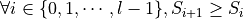.
is
increasing,
or increasing under canonical order,
if and only if 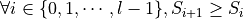.
- Returns:
True if this rooted-plane-tree is increasing, False otherwise.
- property is_leaf: bool¶
Returns True if the RootedPlaneTree is a leaf, False otherwise.
A RootedPlaneTree is a leaf if and only if it contains no children.
- is_less_than_under_o1(t)[source]¶
Returns True if this rooted-plane-tree is less than t under 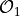, False otherwise.
Definition: ¶
Let
and 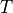 be rooted-plane-trees.We say that 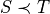 under if and only if:
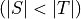,
or:
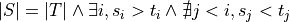
- param t:
A rooted-plane-tree.
- return:
True if the current rooted-plane-tree is equal to t, False otherwise.
- Parameters:
t (RootedPlaneTree | tuple[RootedPlaneTree, ...] | Iterator | Generator | None)
- Return type:
bool
- is_rooted_plane_tree_equivalent_to(t)[source]¶
Returns True if this rooted-plane-tree is connective-equivalent to rooted-plane-tree t.
Formal definition 1¶
A rooted-plane-tree t is connective-equivalent to a rooted-plane-tree u if and only if - degree(t) = degree(u). - and immediate sub-rooted-plane-tree t_i of t is-rooted-plane-tree-equivalent to immediate sub-rooted-plane-tree u_i of u with 0 <= i < degree(t) - 1.
Formal definition 2¶
A rooted-plane-tree t is connective-equivalent to a rooted-plane-tree u if and only if the unsorted-inverted-integer AHU of t = the unsorted-inverted-integer AHU of u.
- param t:
A rooted-plane-tree.
- return:
- Parameters:
t (RootedPlaneTree | tuple[RootedPlaneTree, ...] | Iterator | Generator | None)
- Return type:
bool
- property is_strictly_increasing: bool¶
Returns True if this rooted-plane-tree is strictly increasing, False otherwise.
Definition - strictly increasing rooted-plane-tree: A rooted-plane-tree is strictly increasing or strictly increasing under canonical order, if its immediate subtrees are strictly ordered.
Definition - strictly increasing rooted-plane-tree: A rooted-plane-tree
is strictly
increasing,
or strictly increasing under canonical order,
if and only if 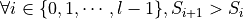.
- Returns:
True if this rooted-plane-tree is strictly increasing, False otherwise.
- iterate_immediate_subtrees()[source]¶
Generator function that iterates the immediate subtrees of this rooted-plane-tree. following the canonical vertex ordering.
- Yields:
RootedPlaneTree - a subtree.
- Returns:
None
- Return type:
Generator[RootedPlaneTree, None, None]
- iterate_subtrees()[source]¶
Generator function that iterates recursively the subtrees of this rooted-plane-tree. using the depth-first / canonical vertex ordering algorithm.
- Yields:
RootedPlaneTree - a subtree.
- Returns:
None
- Return type:
Generator[RootedPlaneTree, None, None]
- represent_as_function(connectives=None)[source]¶
-
- Parameters:
connectives (tuple | None)
- Return type:
str
- represent_as_multiline_string_vertical_tree_representation(prefix='', is_root=True, is_first=True, is_last=True)[source]¶
Returns a multiline string representation of this RootedPlaneTree.
May be useful to get a quick visual understanding of the tree structure.
Sample¶
⬤━┳━⬤ ┣━⬤━━━⬤ ┣━⬤━┳━⬤ ┃ ┣━⬤ ┃ ┗━⬤ ┗━⬤━━━⬤
- Return type:
str
- property size¶
Returns the size of this RootedPlaneTree.
Definition: the size of a rooted plan tree is the total number of vertices in the graph.
- substitute_subtree(m)[source]¶
-
- Parameters:
m (dict[RootedPlaneTree | tuple[RootedPlaneTree, ...] | Iterator | Generator | None, RootedPlaneTree | tuple[RootedPlaneTree, ...] | Iterator | Generator | None])
- Return type:
- property subtrees: tuple[RootedPlaneTree, ...]¶
The tuple of subtrees ordered by the depth-first / canonical vertex ordering algorithm.
- Returns:
the tuple of the subtrees.
- Parameters:
-
children (FlexibleRootedPlaneTree)
tuple_tree (TupleTree)
- punctilious.rooted_plane_tree_library.TupleTree¶
A TupleTree is a tree of tuples whose leafs are empty empty tuples.
It allows to express RootedPlaneTree using python tuple syntax, e.g.: ( (), (), ( (), (), ), )
alias of
int|tuple[TupleTree, …]
punctilious.transformation_library module¶
- class punctilious.transformation_library.AbstractOrderedSet(phi, n, p, i, t, s)[source]¶
Bases:
AbstractFormulaAn abstract ordered set is an abstract-formula that has the structure of a finite (computable) ordered-set.
Definition¶
An abstract-formula 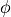 is an abstract-ordered-set if and only if:
its immediate sub-formulas are unique.
- N.B.: abstract-classes being structurally composed of a rooted-tree-plane,
the immediate sub-formulas of an abstract-formula are necessarily ordered.
Use case¶
The abstract-ordered-set is the preimage component of the abstract-map.
- __init__(phi, n, p, i, t, s)[source]¶
-
- Parameters:
-
n (int) – The natural number of the map’s root element.
i (AbstractFormula | tuple[RootedPlaneTree | tuple[RootedPlaneTree, ...] | Iterator | Generator | None, NaturalNumber1Sequence | tuple[int, ...] | Iterator | Generator | None] | Iterator | Generator | None) – The image of the map.
p (AbstractFormula | tuple[RootedPlaneTree | tuple[RootedPlaneTree, ...] | Iterator | Generator | None, NaturalNumber1Sequence | tuple[int, ...] | Iterator | Generator | None] | Iterator | Generator | None) – The preimage of the map.
phi (AbstractFormula | tuple[RootedPlaneTree | tuple[RootedPlaneTree, ...] | Iterator | Generator | None, NaturalNumber1Sequence | tuple[int, ...] | Iterator | Generator | None] | Iterator | Generator | None)
t (RootedPlaneTree | tuple[RootedPlaneTree, ...] | Iterator | Generator | None)
s (NaturalNumber1Sequence | tuple[int, ...] | Iterator | Generator | None)
- classmethod from_abstract_formula(phi)[source]¶
Takes an abstract-formula structurally compatible with an abstract-ordered-set, and returns the same object typed as
AbstractOrderedSet.- Parameters:
phi (AbstractFormula | tuple[RootedPlaneTree | tuple[RootedPlaneTree, ...] | Iterator | Generator | None, NaturalNumber1Sequence | tuple[int, ...] | Iterator | Generator | None] | Iterator | Generator | None)
- Returns:
- Parameters:
-
phi (afl.FlexibleAbstractFormula)
n (int)
p (afl.FlexibleAbstractFormula)
i (afl.FlexibleAbstractFormula)
t (rptl.FlexibleRootedPlaneTree)
s (nn1s.FlexibleNaturalNumber1Sequence)
- class punctilious.transformation_library.AbstractMap(n, p, i)[source]¶
Bases:
AbstractFormulaAn
AbstractFormulathat has the structure of a finite (computable) map.Definition¶
An abstract-formula is an abstract-map if and only if:
its arity equals 2,
the arities of its immediate sub-formulas are equal.
Properties¶
pre-image: noted 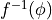, the first immediate sub-formula of . Note that the pre-image is not a set, it is a sub-formula.
image: noted 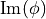, the second immediate sub-formula of . Note that the pre-image is not a set, it is a sub-formula.
Definition¶
An abstract-map is canonical if and only if:
its pre-image is canonically ordered.
Use case¶
If an abstract-formula is an abstract-map, then there is an algorithm that receives an abstract-formula
 as input,
that if is an element of
returns the element of that is at the same
index position.
as input,
that if is an element of
returns the element of that is at the same
index position.- __init__(n, p, i)[source]¶
-
- Parameters:
-
n (int) – The natural number of the root element of the map.
i (AbstractFormula | tuple[RootedPlaneTree | tuple[RootedPlaneTree, ...] | Iterator | Generator | None, NaturalNumber1Sequence | tuple[int, ...] | Iterator | Generator | None] | Iterator | Generator | None) – The image of the map.
p (AbstractFormula | tuple[RootedPlaneTree | tuple[RootedPlaneTree, ...] | Iterator | Generator | None, NaturalNumber1Sequence | tuple[int, ...] | Iterator | Generator | None] | Iterator | Generator | None) – The preimage of the map.
- property canonical_abstract_formula: AbstractMap¶
The canonical-abstract-formula of this abstract-formula.
Definition: the canonical-abstract-formula phi of an abstract-formula psi is a formula such that:
their rooted-plane-tree are rooted-plane-tree-equivalent,
-
- the natural-number-sequence of phi is the canonical-naturel-number-sequence
of the natural-number-sequence of psi
- Returns:
The canonical-abstract-formula of this abstract-formula.
- property pre_image: AbstractFormula¶
- property image: AbstractFormula¶
- Parameters:
-
n (int)
p (afl.FlexibleAbstractFormula)
i (afl.FlexibleAbstractFormula)
- class punctilious.transformation_library.AbstractTransformation(i, o)[source]¶
Bases:
AbstractFormulaAn abstract transformation.
An abstract-formula 0(phi, psi) where phi is denoted as the input, and psi is denoted as the output.
A tuple (input, output).
- Parameters:
-
i (afl.FlexibleAbstractFormula)
o (afl.FlexibleAbstractFormula)
- __init__(i, o)[source]¶
-
- Parameters:
-
i (AbstractFormula | tuple[RootedPlaneTree | tuple[RootedPlaneTree, ...] | Iterator | Generator | None, NaturalNumber1Sequence | tuple[int, ...] | Iterator | Generator | None] | Iterator | Generator | None)
o (AbstractFormula | tuple[RootedPlaneTree | tuple[RootedPlaneTree, ...] | Iterator | Generator | None, NaturalNumber1Sequence | tuple[int, ...] | Iterator | Generator | None] | Iterator | Generator | None)
- class punctilious.transformation_library.AbstractTransformationBySubstitution(i, v, s, o)[source]¶
Bases:
AbstractTransformationA tuple (input, output) where the input is composed of a tuple: (input, variables, substitution_values) to which correspond a unique output
input: the formula that must be transformed
variables: the unique placeholders of the formulas to be replaced, of length n, by convention, we will use atomic (leaf) formulas, in ascending order
substitution: the unique substitution_values for the variables, of length n
output: the transformed
- Parameters:
-
i (afl.FlexibleAbstractFormula)
v (afl.FlexibleAbstractFormula)
s (afl.FlexibleAbstractFormula)
o (afl.FlexibleAbstractFormula)
- __init__(i, o)[source]¶
-
- Parameters:
-
i (AbstractFormula | tuple[RootedPlaneTree | tuple[RootedPlaneTree, ...] | Iterator | Generator | None, NaturalNumber1Sequence | tuple[int, ...] | Iterator | Generator | None] | Iterator | Generator | None)
o (AbstractFormula | tuple[RootedPlaneTree | tuple[RootedPlaneTree, ...] | Iterator | Generator | None, NaturalNumber1Sequence | tuple[int, ...] | Iterator | Generator | None] | Iterator | Generator | None)
- class punctilious.transformation_library.TransformationBySubstitution(i, v, s, o)[source]¶
Bases:
object- Parameters:
-
i (afl.FlexibleAbstractFormula)
v (afl.FlexibleAbstractFormula)
s (afl.FlexibleAbstractFormula)
o (afl.FlexibleAbstractFormula)
- __init__(i, v, s, o)[source]¶
-
- Parameters:
-
i (AbstractFormula | tuple[RootedPlaneTree | tuple[RootedPlaneTree, ...] | Iterator | Generator | None, NaturalNumber1Sequence | tuple[int, ...] | Iterator | Generator | None] | Iterator | Generator | None)
v (AbstractFormula | tuple[RootedPlaneTree | tuple[RootedPlaneTree, ...] | Iterator | Generator | None, NaturalNumber1Sequence | tuple[int, ...] | Iterator | Generator | None] | Iterator | Generator | None)
s (AbstractFormula | tuple[RootedPlaneTree | tuple[RootedPlaneTree, ...] | Iterator | Generator | None, NaturalNumber1Sequence | tuple[int, ...] | Iterator | Generator | None] | Iterator | Generator | None)
o (AbstractFormula | tuple[RootedPlaneTree | tuple[RootedPlaneTree, ...] | Iterator | Generator | None, NaturalNumber1Sequence | tuple[int, ...] | Iterator | Generator | None] | Iterator | Generator | None)
punctilious.util module¶
- class punctilious.util.TernaryBoolean(*values)[source]¶
Bases:
EnumA ternary Boolean where the 3rd value means “not available”.
- TRUE = True¶
- FALSE = False¶
- NOT_AVAILABLE = 'not available'¶
- class punctilious.util.ClassPropertyDescriptor(f)[source]¶
Bases:
objectDescriptor for creating class-level properties.
- punctilious.util.decrement_last_element(s)[source]¶
Receives a sequence of natural numbers (s0, s1, …, si) and returns (s0, s1, …, si - 1).
- Parameters:
s
- Returns:
- punctilious.util.deduplicate_integer_sequence(t)[source]¶
-
- Given a sequence S of integers, return a sequence T such that:
-
the order and values of elements are preserved with the exception that
only the first occurrence of every distinct value is copied to T.
Samples: (1,5,0,3,5,1,1,2) –> (1,5,0,3,2)
- Parameters:
t (tuple[int, ...])
- Returns:
- Return type:
tuple[int, …]
- punctilious.util.data_validate_unicity(elements, raise_error_on_duplicate=True)[source]¶
Given some elements, returns a tuple of unique elements.
- Parameters:
-
elements (Iterable)
raise_error_on_duplicate (bool)
- Returns:
- Return type:
tuple
- punctilious.util.increment_last_element(s)[source]¶
Receives a sequence of natural numbers (s0, s1, …, si) and returns (s0, s1, …, si + 1).
- Parameters:
s
- Returns: